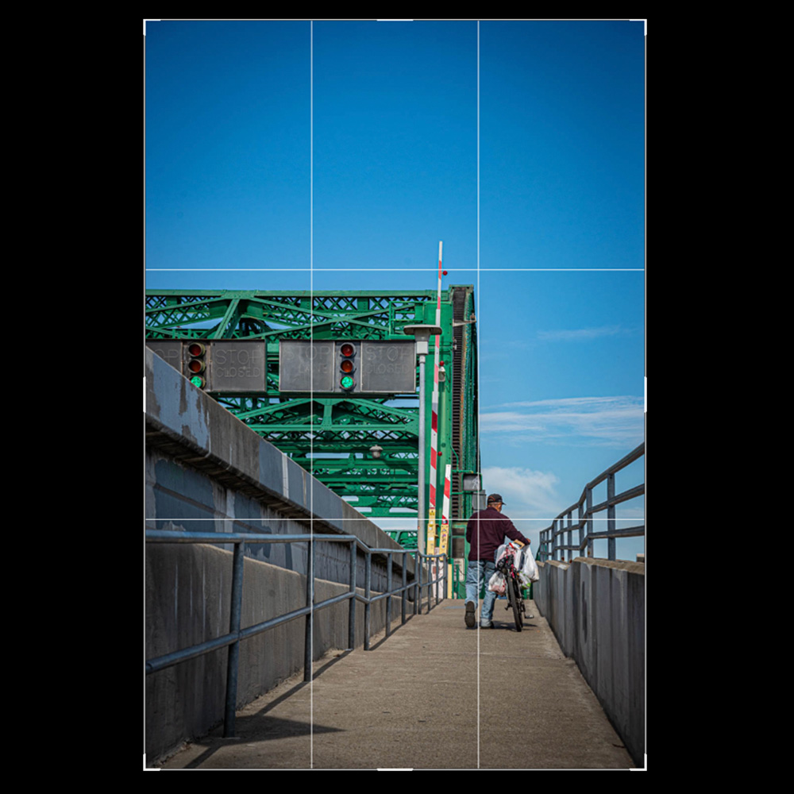
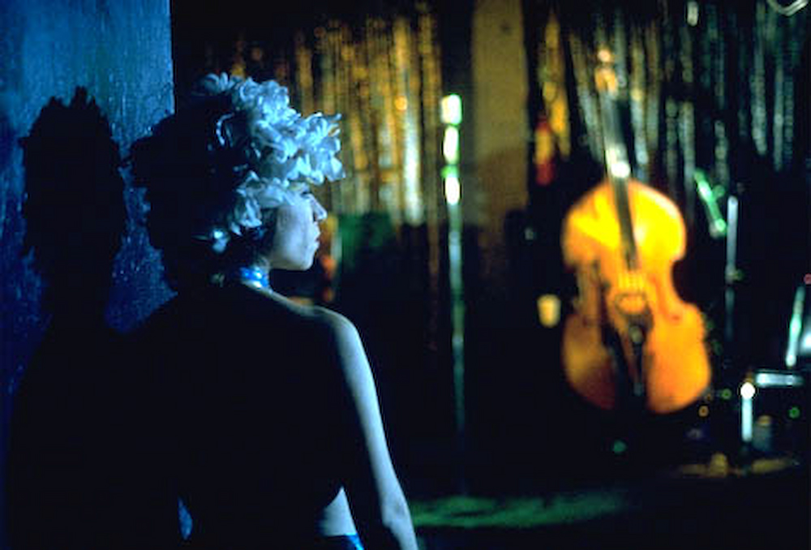

Principles of Photography
Composition
Leading Lines
Leading lines are vectors or lines that draw the viewer's eye a certain direction or to a certain
point
in the composition.

Rule of Thirds
Place objects and focal points along lines created by dividing the image into thirds, horizontally
and
vertically.
Aspect Ratio
Aspect Ratio is the ratio of the width to the height of the image, or the long side to the short
side.

Frame within a Frame
You can use objects in the foreground to 'frame' objects in the background, which can help direct
the
viewers eye to you subject.

Balance
Balance refers to balancing the visual interest within the image. The composition 'feels' right.
Symmetry
Symmetry or a Static Balance is when visual weight is equal across an image, usually across the
vertical
or horizontal axis. It feels centered.